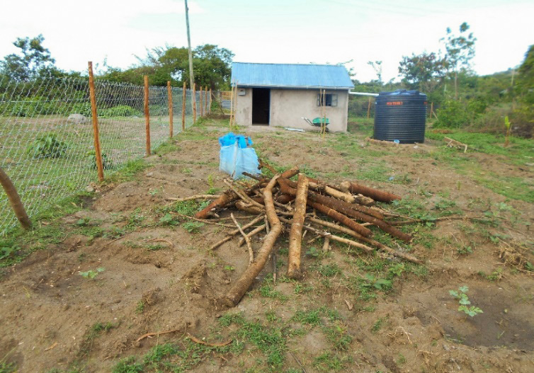
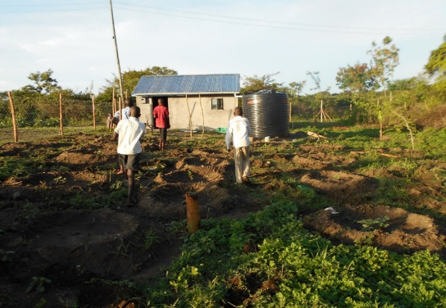
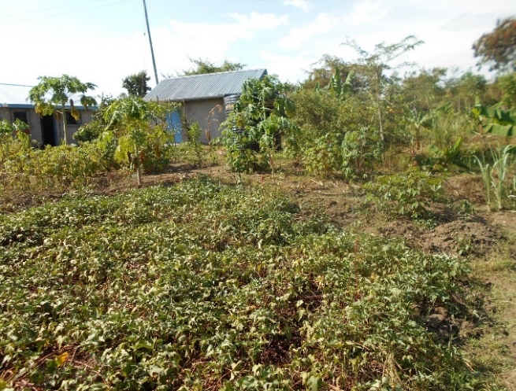
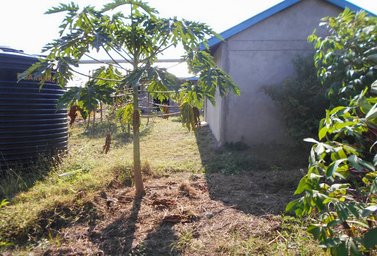
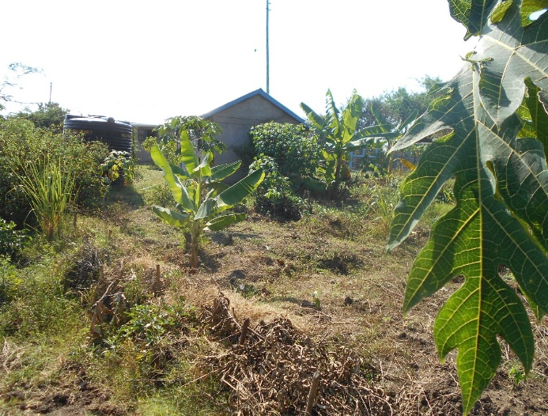
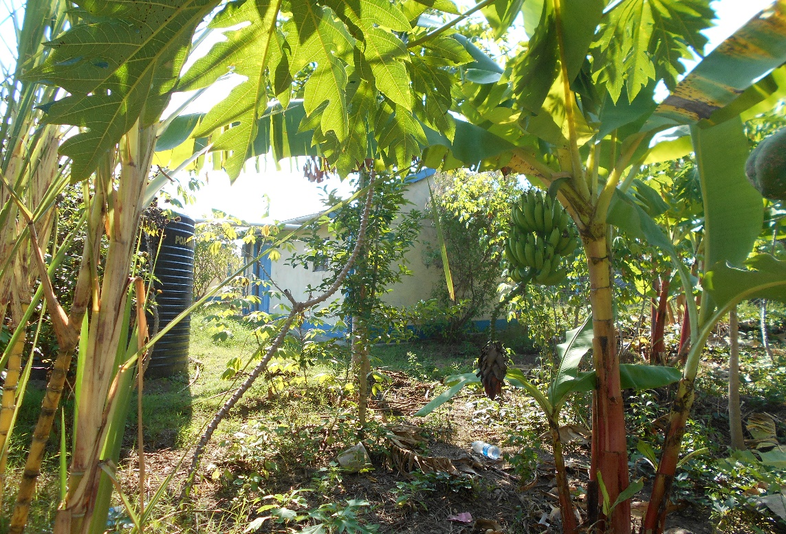
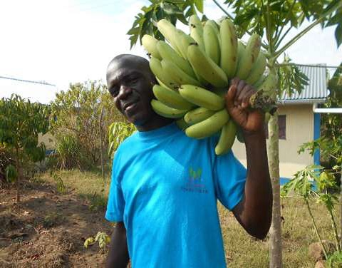

Food Security · Environmental Sustainability
Orchard Garden & Food Sustainability
Growing food, strengthening resilience and nurturing community livelihoods on Rusinga Island.

About the orchard
KWEPU’s orchard garden was initiated in October 2022 on approximately three-quarters of an acre in western Rusinga Island. It brings together fruit trees and food crops as a practical effort toward local food sustainability and community resilience.
In a report published in October 2023, KWEPU described crops including pawpaw, bananas, avocado, lemons, oranges, mangoes, cassava, sweet potatoes and passion fruit. The garden was maintained through a period of prolonged drought, which challenged local agriculture.
A community resource
The 2023 report recorded a watermelon harvest that generated KSh 16,850. According to the report, proceeds were used to install electrical wiring and connect electricity in the storehouse. The report also described a building used as a meeting venue and office for coordinating activities.
These outcomes are drawn from the original 2023 report and should be understood as historical milestones, not a statement of current orchard status.
Orchard in pictures








Continuing the work
The original report outlined plans for succession planting, additional fruit trees and expansion of production. We are presenting these as plans reported in 2023; please contact KWEPU for the latest progress and current needs.
Source and acknowledgement: This project summary is based on KWEPU Report on the Orchard (BaRuIs, October 24, 2023). BaRuIs is acknowledged as a partner/documentation source; claims and dates above reflect that report.